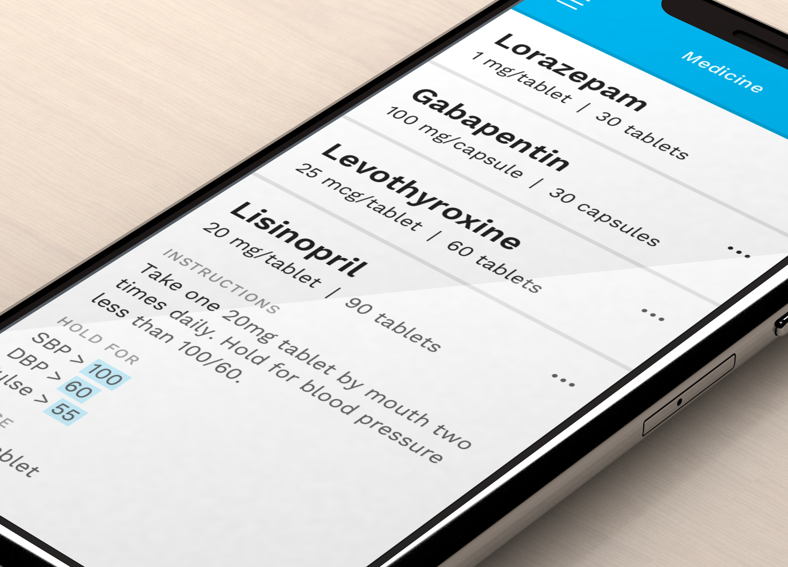

Safewatch
Safewatch was a software product that was intended to keep track of medications and dispense them when appropriate—but not before. The concept was amazing, as was the team, but unfortunately funding was never secured and the project never got off the ground.

I always start my design process on pen & paper. You can see the influence it had on the final product. Simplicity was key for the Safewatch experience & a lot of the target users were older, forgetful, and not very tech-savvy.